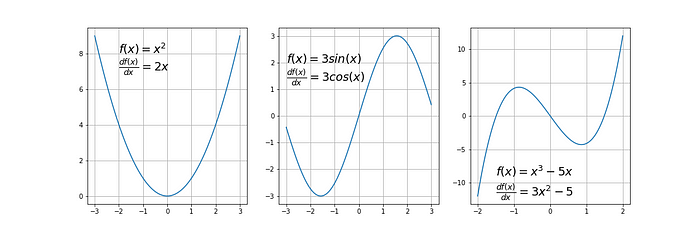
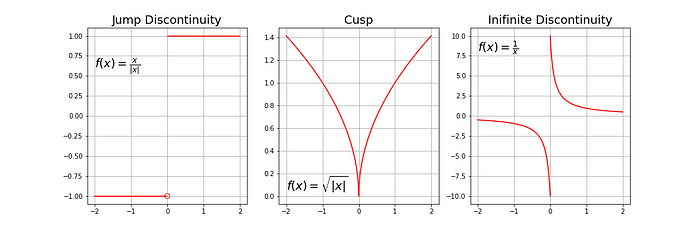
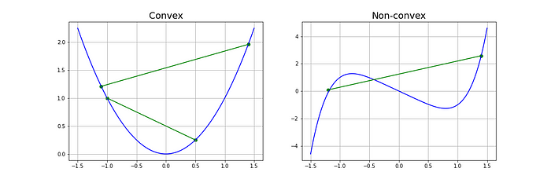

import matplotlib.pyplot as plt
import numpy as np
from typing import Callable4 Anatomía de un algoritmo de aprendizaje
4.1 Bloques de construcción de un algoritmo de aprendizaje
En los algoritmos de aprendizaje que abarcamos en la sección anterior podemos observar los 3 bloques que se utilizan para construirlos:
| Bloque | Descripción |
|---|---|
| Función de pérdida |
|
| Criterio de optimización |
|
| Rutina de optimización |
|
4.2 Descenso de gradiente (GD)
El descenso de gradiente es un algoritmo iterativo que permite encontrar el máximo o mínimo de una función dada, y se utiliza en los algoritmos de machine learning (ML) y deep learning (DL) para minimizar las funiciones de pérdida.
En conjunto con el descenso de gradiente estocástico, son de los algoritmos más utilizados en ML y DL.
4.2.1 Requisitos de la función a optimizar
- Diferenciable: tiene una derivada para cada punto en su dominio.


- Convexa: para una función univariada, una línea que conecta dos puntos de la función pasa sobre o encima de la función. Las funciones convexas solo tienen un mínimo, que es el mínimo global.

Los criterios de optimización de muchos modelos (regresión lineal y logística, SVM, entre otros) son convexos, por lo que el GD es un método adecuado.
Los criterios de optimización para las redes neuronales no son convexos (tienen mínimos locales y globales), pero en la práctica es suficiente encontrar mínimos globales, por lo que el GD también resulta un método útil.
4.2.2 Gradiente
Es la pendiente de una curva en una dirección específica.
En funciones univariadas la obtenemos evaluando la primera derivada en un punto de interés.
En funciones multivariadas, es un vector de derivadas en cada dirección principal, lo que conocemos como derivadas parciales.
El gradiente para una función \(f(x)\) en un punto \(p\) está dado por: \[ \nabla f(p) = \begin{bmatrix} \frac{\partial f}{\partial x_1} (p) \\ \vdots \\ \frac{\partial f}{\partial x_n} (p) \end{bmatrix} \]
4.2.3 Algoritmo de descenso de gradiente
El método se puede resumir mediante la siguiente ecuación:
\[ p_{n+1} = p_n - \alpha \nabla f(p_n) \]
Paso a paso:
Escoger un punto inicial: \(p_n\)
Calcular el gradiente en este punto: \(\nabla f(p_n)\)
Moverse en la dirección contraria al gradiente, a una distancia dada por la tasa de aprendizaje \(\alpha\)
Repetir pasos 2 y 3 hasta que se cumpla lo siguiente:
Número máximo de iteraciones alcanzado
El tamaño del paso es más pequeño que la tolerancia definida (cambio en \(\alpha\) o gradiente muy baja)
4.2.4 Imports
4.2.5 Ejemplo 1: función univariada, derivable no convexa
Función a optimizar: \[\begin{equation*} f(x) = x^4 - 2x^3 + 2 \end{equation*}\] Y su gradiente:
\[\begin{equation*} \frac{df(x)}{dx} = 4x^3-6x^2 \end{equation*}\]
Definiendo \(f(x)\) y \(\frac{df(x)}{dx}\) en python
# f(x)
def f_ej1(x:float):
return x**4-2*x**3+2
# df(x)/dx
def dfdx_ej1(x:float):
return 4*x**3-6*x**24.2.6 Gráfica de \(f(x)\)
x = np.linspace(-0.8, 2.2, 100)
y = f_ej1(x)
plt.grid(True)
plt.plot(x,y)
Definiendo algoritmo gradient_descent
def gradient_descent(start: float, gradient: Callable[[float], float],
learn_rate: float, max_iter: int, tol: float = 0.01):
x = start
steps = [start] # history tracking
for _ in range(max_iter):
diff = learn_rate*gradient(x)
if np.abs(diff) < tol:
break
x = x - diff
steps.append(x) # history tracing
return steps, xLlamando a gradient_descent para el ejemplo 1
start = 2
gradient = dfdx_ej1
learn_rate = 0.1
max_iter = 100
gradient_descent(start, gradient, learn_rate, max_iter)([2, 1.2, 1.3728000000000002, 1.4686874222592001, 1.4957044497076786],
1.4957044497076786)
Variaciones al ejemplo 1


4.2.7 Códigos usados para esta sección
# Gradient Descent
# gcorazzari
import matplotlib.pyplot as plt
import matplotlib.animation as animation
import numpy as np
from typing import Callable
def update(frame):
x = x_gd[:frame]
y = y_gd[:frame]
line_gd.set_xdata(x)
line_gd.set_ydata(y)
return line_gd
def gradient_descent(
start: float,
gradient: Callable[[float], float],
learn_rate: float,
max_iter: int,
tol: float = 0.01,
):
x = start
steps = [start] # history tracking
for _ in range(max_iter):
diff = learn_rate * gradient(x)
if np.abs(diff) < tol:
break
x = x - diff
steps.append(x) # history tracing
return steps, x
# EJ1-4
def f_ej1(x: float):
return x**4 - 2 * x**3 + 2
def dfdx_ej1(x: float):
return 4 * x**3 - 6 * x**2
start = -0.5
gradient = dfdx_ej1
learn_rate = 0.3
max_iter = 100
res_ej1 = gradient_descent(start, gradient, learn_rate, max_iter)
fig, ax = plt.subplots()
x = np.linspace(-0.8, 2.2, 100)
y = f_ej1(x)
line = ax.plot(x, y)
x_gd = np.array(res_ej1[0])
y_gd = f_ej1(x_gd)
line_gd = ax.plot(
res_ej1[0][0], f_ej1(res_ej1[0][0]), "ro-", linewidth=0.5, markersize=2
)[0]
ani = animation.FuncAnimation(fig=fig, func=update, frames=102, interval=200)
plt.grid(True)
plt.title("Inicio=-0.5, alpha=0.3")
writer = animation.PillowWriter(fps=5)
plt.show()
ani.save("ej1-4.gif", writer=writer)
# EJ1-3
def f_ej1(x: float):
return x**4 - 2 * x**3 + 2
def dfdx_ej1(x: float):
return 4 * x**3 - 6 * x**2
start = -0.5
gradient = dfdx_ej1
learn_rate = 0.1
max_iter = 100
res_ej1 = gradient_descent(start, gradient, learn_rate, max_iter)
fig, ax = plt.subplots()
x = np.linspace(-0.8, 2.2, 100)
y = f_ej1(x)
line = ax.plot(x, y)
x_gd = np.array(res_ej1[0])
y_gd = f_ej1(x_gd)
line_gd = ax.plot(
res_ej1[0][0], f_ej1(res_ej1[0][0]), "ro-", linewidth=0.5, markersize=2
)[0]
ani = animation.FuncAnimation(fig=fig, func=update, frames=9, interval=500)
plt.grid(True)
plt.title("Inicio=-0.5, alpha=0.1")
writer = animation.PillowWriter(fps=5)
plt.show()
ani.save("ej1-3.gif", writer=writer)
# EJ1-2
def f_ej1(x: float):
return x**4 - 2 * x**3 + 2
def dfdx_ej1(x: float):
return 4 * x**3 - 6 * x**2
start = 2
gradient = dfdx_ej1
learn_rate = 0.3
max_iter = 100
res_ej1 = gradient_descent(start, gradient, learn_rate, max_iter)
fig, ax = plt.subplots()
x = np.linspace(-0.8, 2.2, 100)
y = f_ej1(x)
line = ax.plot(x, y)
x_gd = np.array(res_ej1[0])
y_gd = f_ej1(x_gd)
line_gd = ax.plot(
res_ej1[0][0], f_ej1(res_ej1[0][0]), "ro-", linewidth=0.5, markersize=2
)[0]
ani = animation.FuncAnimation(fig=fig, func=update, frames=4, interval=200)
plt.grid(True)
plt.title("Inicio=2, alpha=0.3")
writer = animation.PillowWriter(fps=5)
plt.show()
ani.save("ej1-2.gif", writer=writer)
# EJ1-1
def f_ej1(x: float):
return x**4 - 2 * x**3 + 2
def dfdx_ej1(x: float):
return 4 * x**3 - 6 * x**2
start = 2
gradient = dfdx_ej1
learn_rate = 0.1
max_iter = 100
res_ej1 = gradient_descent(start, gradient, learn_rate, max_iter)
fig, ax = plt.subplots()
x = np.linspace(-0.8, 2.2, 100)
y = f_ej1(x)
line = ax.plot(x, y)
x_gd = np.array(res_ej1[0])
y_gd = f_ej1(x_gd)
line_gd = ax.plot(
res_ej1[0][0], f_ej1(res_ej1[0][0]), "ro-", linewidth=0.5, markersize=2
)[0]
ani = animation.FuncAnimation(fig=fig, func=update, frames=6, interval=500)
plt.grid(True)
plt.title("Inicio=2, alpha=0.1")
writer = animation.PillowWriter(fps=5)
plt.show()
ani.save("ej1-1.gif", writer=writer)